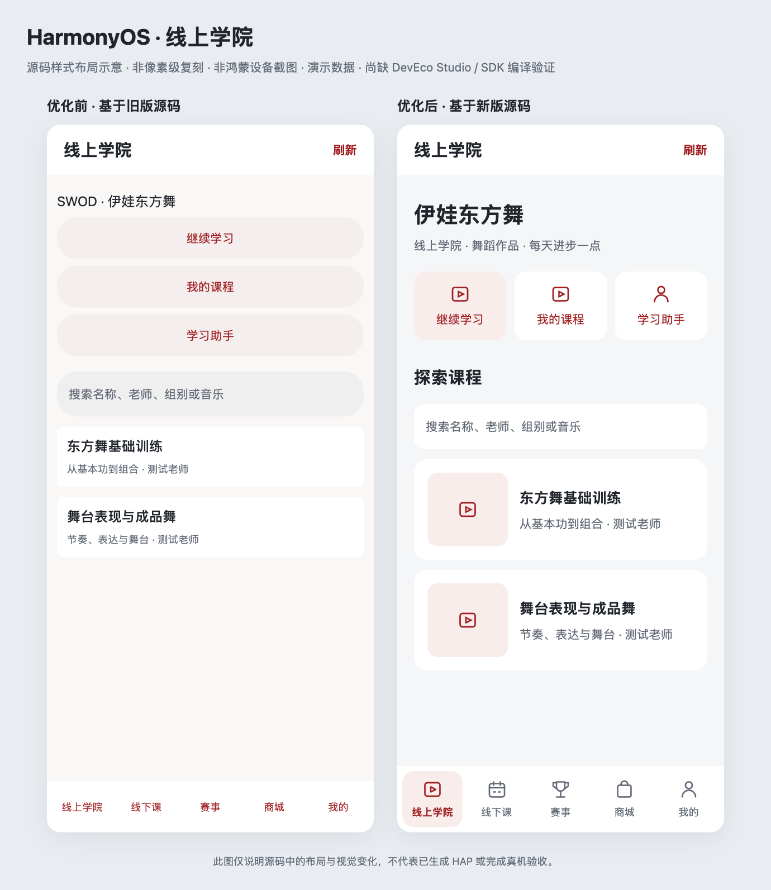

SWOD 三端 UI 升级
简洁明亮，突出课程与内容。2026 年 10 月 16 日 · 开发验证成果
iOS：模拟器及设备目标构建通过Android：6 项测试通过，签名候选 APK 已生成HarmonyOS：源码已更新，SDK 构建待完成
优化前 优化后
优化后

本次调整
- 减少装饰和首屏操作占位，让课程封面、标题和列表优先展示。
- 统一背景、内容表面、品牌操作色、字号层级、留白与触控尺寸。
- 保留五个主入口及业务流程，改善搜索、加载、错误和未登录状态。
- iOS 适配动态字体与 iPad 原生导航；Android 支持深色主题、字体缩放和可滚动的宽屏导航栏。
- 鸿蒙同步公共组件、选中态、语义颜色和明暗图标；因缺少 DevEco Studio / SDK，尚未完成构建。